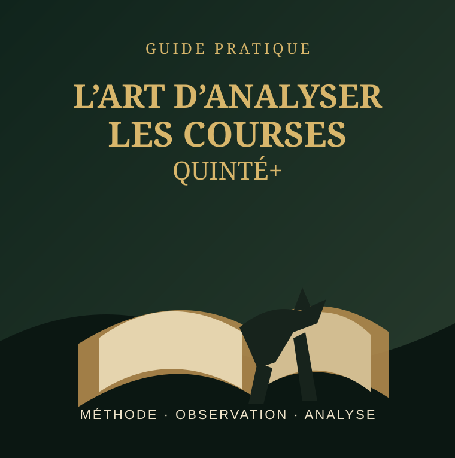

Comprendre · Observer · Analyser
L’Art d’Analyser le Quinté
Un guide pratique pour maîtriser l’analyse du Quinté, étudier les chevaux et repérer les opportunités cachées afin de faire des choix plus éclairés.
OBTENIR LE LIVREAccès après paiement · Paiement via Lomopay
À l’intérieur du guide
Une approche structurée de l’analyse
Les bases de l’analyse hippique
Les critères de sélection
Comprendre les courses
Les chevaux outsiders
Une méthode structurée